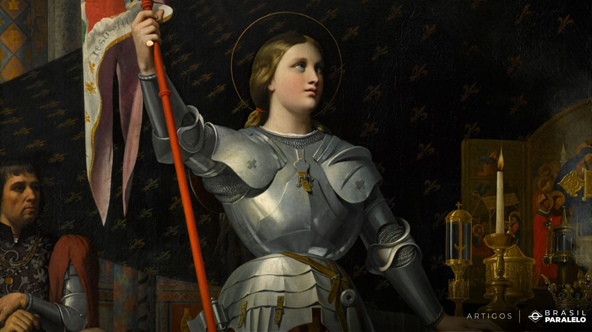
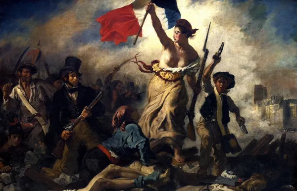
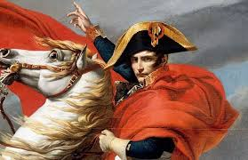

A história da França é rica e complexa, marcada por eventos significativos que moldaram tanto o país quanto o mundo. Suas raízes remontam aos tempos da Gália, habitada por povos celtas e depois conquistada pelos romanos no século I a.C., tornando-se uma província do Império Romano. Com a queda do império, tribos germânicas como os francos se estabeleceram na região, e foi daí que o nome "França" (de "Frância", terra dos francos) se originou. Em 800 d.C., o reino franco alcançou seu auge com a coroação de Carlos Magno como imperador do Sacro Império Romano-Germânico.
Durante a Idade Média, a França experimentou períodos de guerra e instabilidade, incluindo a Guerra dos Cem Anos (1337-1453) contra a Inglaterra, um conflito que devastou o país, mas também ajudou a consolidar sua identidade nacional. A guerra terminou com a vitória francesa, ajudada pela figura icônica de Joana d'Arc, que se tornou um símbolo de resistência e patriotismo.
Nos séculos seguintes, a França viveu o absolutismo monárquico, com reis como Luís XIV, o "Rei Sol", que transformou o país em uma potência europeia e estabeleceu o modelo de centralização do poder. Contudo, o poder da monarquia começou a ser questionado, levando à Revolução Francesa de 1789, um dos eventos mais importantes da história ocidental. A revolução derrubou a monarquia, aboliu privilégios feudais, proclamou os direitos universais do cidadão e inspirou movimentos democráticos em todo o mundo.
Após a revolução, Napoleão Bonaparte emergiu como líder e, mais tarde, imperador, expandindo a influência francesa por meio das Guerras Napoleônicas. A derrota de Napoleão em 1815 levou a um período de instabilidade e restaurações, mas o século XIX foi marcado pela industrialização e a expansão do império colonial francês.
No século XX, a França participou das duas Guerras Mundiais. Na Primeira Guerra, foi um dos Aliados vitoriosos, mas sofreu graves perdas. Na Segunda Guerra, foi ocupada pela Alemanha nazista e, após a libertação em 1944, teve papel importante na reconstrução da Europa. Durante a Guerra Fria, a França se tornou uma potência nuclear e adotou uma postura independente dentro da OTAN.

Hoje, a França é uma república democrática e uma das maiores economias da Europa. Membro fundador da União Europeia e da ONU, a França continua a exercer influência significativa nas artes, ciência, filosofia e na diplomacia global.